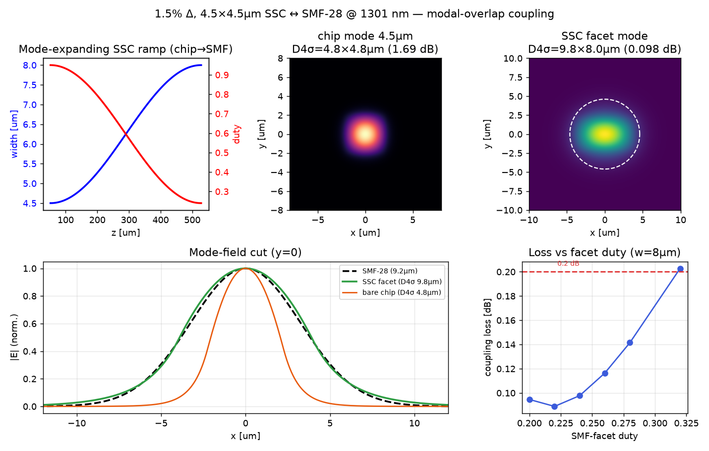
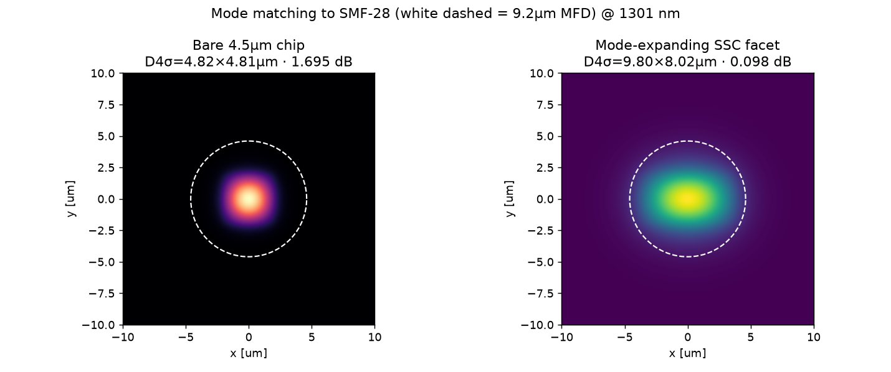

1.5% Δ silica channel waveguide (4.5×4.5 µm) ↔ SMF-28 at 1301 nm — a mode-expanding segmented SSC reaching 0.098 dB coupling loss (mode-overlap integral), below the 0.2 dB target.
SMF-28 MFD is ≈ 9.2 µm at 1310 nm. The bare 4.5 µm core guides only a ≈ 4.8 µm mode, so the SSC expands it up to ≈ 9–10 µm to match the fiber. The last field is the mode-field diameter the SSC facet presents to the SMF (the design target).
Analytic Gaussian-overlap estimate for a quick look; the authoritative numbers below are the mode-overlap integral between the true 2-D waveguide/facet mode (from a mode solver) and the SMF-28 field.
Mode field cross-section — blue: SMF Gaussian, red dashed: bare WG mode, green: expanded SSC-tip mode. Larger overlap with the SMF means lower loss.
Butt-coupling loss is the mode-overlap integral between the fiber mode and the waveguide (facet) mode — the robust, standard definition:
The 2-D waveguide mode E_wg (the bare chip mode, or the duty-averaged effective-medium facet mode) is found with an imaginary-distance mode solver on the real index cross-section; E_smf is the SMF-28 field (MFD 9.2 µm). The segmented taper's role is to expand the chip mode to the facet mode adiabatically, so the device coupling loss equals the facet-mode / SMF mismatch.
Note on method. The low-loss facet mode is weakly guided (near cutoff). A "launch a Gaussian, propagate it, overlap the output" scalar-BPM metric is unreliable in that regime: even propagating the exact expanded eigenmode returns a self-overlap far below 100 % (a paraxial mode-beating artefact), which spuriously inflates the loss. The mode-overlap integral above is free of that artefact, so it is used for the reported numbers.
Chip waveguide 4.5 µm × 4.5 µm solid; the segmented taper ramps the duty 0.95 → 0.24 (cosine) and the segment width 4.5 → 8.0 µm over a gentle ≈ 530 µm length, expanding the mode from 4.8 µm to ≈ 9.8 µm at the SMF facet.
| Quantity | Value |
|---|---|
| Coupling loss — SSC facet ↔ SMF-28 | 0.098 dB (η = 97.77 %) |
| Coupling loss — bare 4.5 µm chip (no SSC) | 1.69 dB (η = 67.7 %) |
| Chip mode field diameter (D4σ) | 4.8 × 4.8 µm (n_eff = 1.46158) |
| SSC facet mode field diameter (D4σ) | 9.8 × 8.0 µm (n_eff = 1.44902) |
| Facet effective width / duty | 8.0 µm / 0.24 (cosine ramp from solid chip) |
| Facet n_eff margin above cladding | +0.0021 (weakly guided, near cutoff) |
Expanding the mode to D4σ ≈ 9.8 × 8.0 µm brings it onto the SMF-28 field (9.2 µm), lifting the overlap from 67.7 % (bare) to 97.8 % — a coupling loss of 0.098 dB, below the 0.2 dB target. A facet duty in ≈ 0.20–0.28 keeps the loss under 0.15 dB. Because the low-loss facet mode is weakly guided (n_eff only ≈ 0.002 above the cladding), the design is more sensitive to duty/width fabrication error and to substrate proximity than a strongly-guided mode; a thick cladding and an adiabatic taper are assumed.


Everything needed to reproduce the result above:
Run with python3 run_modal_ssc_1p5_4p5um_1301.py --out . (needs numpy, gdstk, matplotlib, and bpm3d.py). Coupling loss is the mode-overlap integral between the solver's 2-D waveguide mode and the SMF-28 field; pass --dx 0.07 for a finer convergence check.
coupling_loss.py mfd_coupling.py Coupling loss tool → MFD & coupling loss tool →
{kind=link}
{kind=link}